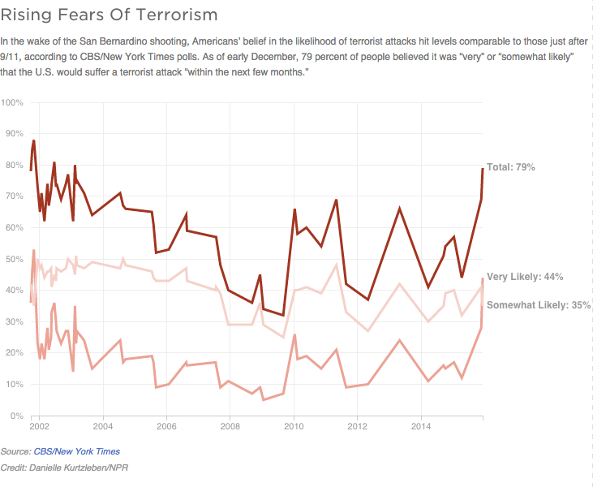

Rising Fears Of Terrorism
In the wake of the San Bernardino shooting, Americans’ belief in the likelihood of terrorist attacks hit levels comparable to those just after 9/11, according to CBS/New York Times polls. As of early December, 79 percent of people believed it was “very” or “somewhat likely” that the U.S. would suffer a terrorist attack “within the next few months.”
